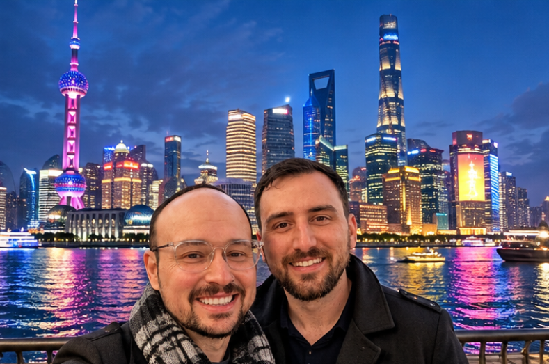
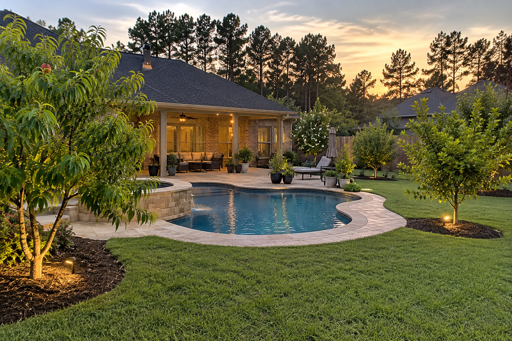
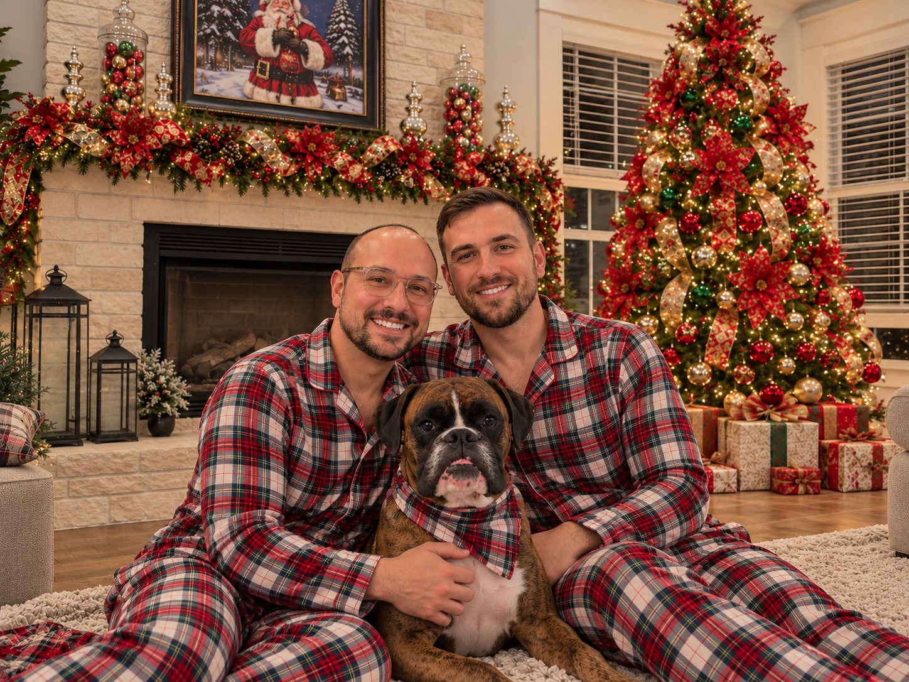

My Interests & Hobbies
Beyond cybersecurity and technology, I enjoy traveling, spending time with family, and exploring new experiences.
Travel & Exploring New Cultures

Traveling is one of my greatest passions. I have been fortunate enough to explore countries across Europe, Asia, and North America, experiencing different cultures, traditions, cuisines, and ways of life.
My travels have taken me to Turkey, Greece, Germany, France, Italy, and throughout the United Kingdom. I have also explored incredible destinations across Asia, including China, Japan, South Korea, and Thailand. Closer to home, I have enjoyed visiting Canada and Mexico, along with many other destinations.
What I love most about traveling is experiencing the world beyond the familiar. Whether exploring historic European cities, admiring the modern skylines of Asia, or discovering local traditions, every destination offers something unique. Traveling has given me a greater appreciation for different cultures and continues to inspire my curiosity about the world.
Gardening & Home Design

Gardening and home design are two of my favorite creative outlets. I enjoy transforming ordinary spaces into beautiful, welcoming environments through landscaping, decorating, and home improvement projects.
I especially love creating outdoor living spaces filled with plants, flowers, and thoughtful design elements. Whether I am working in the garden, planning a new landscaping project, or updating the interior of my home, I enjoy bringing my ideas to life.
My personal decorating style combines modern elegance with the warmth and character of an Italian farmhouse. For me, home design is about creating spaces that are both beautiful and comfortable.
Family & Free Time

Outside of school and cybersecurity, spending quality time with my family is one of the most important parts of my life. My husband and I enjoy traveling, exploring new places, and making memories together.
Our boxer, Stella, is a very special part of our family. She has a big personality and always finds a way to make us smile. Whether we are relaxing at home or spending time together, she is usually right by our side.
I also enjoy the holiday season, especially Christmas. Decorating our home, putting up the Christmas tree, and spending time with the people I love are some of my favorite traditions. For me, the best moments are often the simple ones spent together.